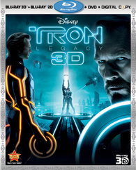

TRON: Legacy

In there is our destiny.
In 2011, Tron might look more than
antiquated. Released at a time when the
merging of computer effects and cinema was only in the beginning stages, the film might have visually dazzled a
few decades ago but to say it looks
rough by today's standards is indisputable. Still, movies like Tron and The Last Starfighter not only
pioneered the effects most audiences
take for granted anymore, they also did something that many of today's films fail to achieve: build the effects
around the story, in these two cases
stories with great characters, quality scripts, and a fair bit of heart. Those values carry a movie more than
any other element, whether a film hails
from the silent era; is one of the early talkies; was filmed in black and white; dazzles with stop-motion
special effects; or now, is constructed on hard
drives and computer screens. When, nearly 30 years after its release, a sequel to Tron was announced and
subsequently hit theaters,
interest was piqued but expectations
were uncertain. Tron was a pioneering film, a picture with an important place in cinema history but also
one with a unique look and feel
that's
so simple it might not really translate all that well into 21st century standards. How could the filmmakers
possibly ramp things up and keep the
world
of Tron looking clean and simplistically efficient while still taking full advantage of the horsepower of
today's films and, just as important,
keep the storyline going and
re-capture the essence of the original? Somehow, they accomplished all of it; Tron: Legacy is one of
those rare special effects films that can
have its cake and eat it too. The picture is a dazzling tour-de-force of visual wonders, but it's also a good
bit entertaining and, more important, finds
a soul that grounds the entire thing in basic human emotions, even in a world where the heartless digital reigns
supreme.